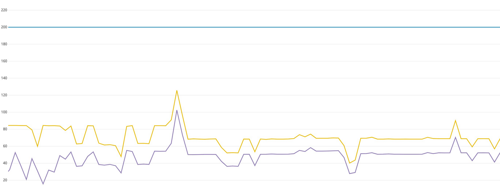

ILP-Simulator
LP-Simulator is response simulator which can be used to provide the response for IOT location platform
API with high throughput and highly configurable response parameter.
Developing business logic backend.
Unit testing and bug fixing.
Technologies:
- - Spring boot
- - Apache Log4J2 – Disruptor
- - Java Concurrency